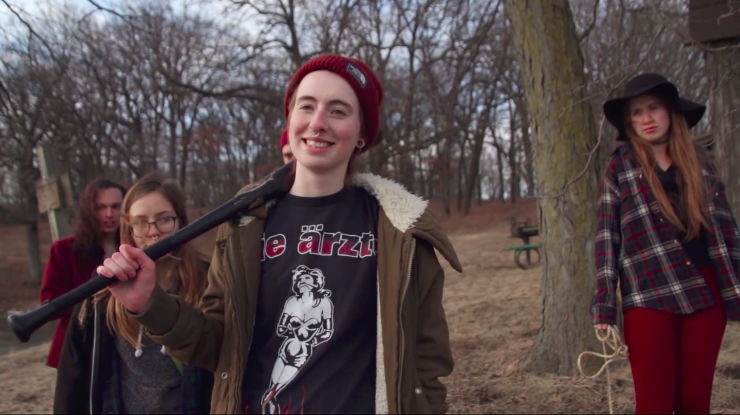
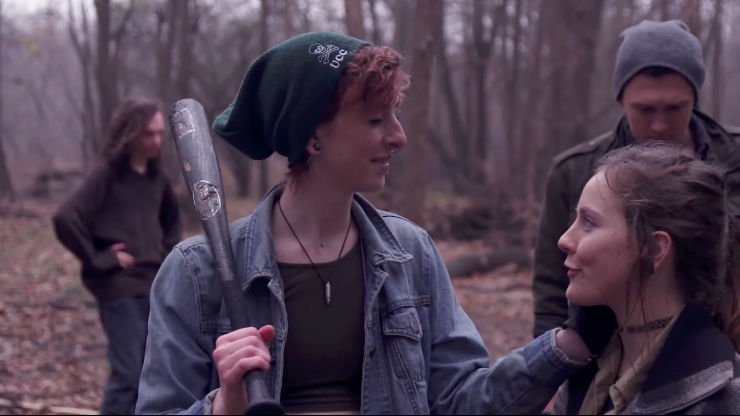
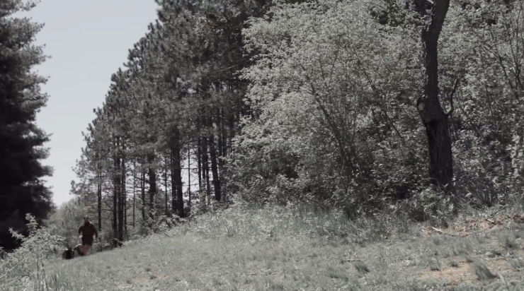

Play Dead Movie
Play Dead is an independent horror movie depicting the story of a dysfunctional family with a peculiar and very disturbing hobby. There are five of them. Lilith, Valek, Phoenix, Mummer. And their leader, Azrael. They scout some remote, less frequented locations and wild campings sites for victims. Once they find some, the game begins. A twisted version of hide and seek, but with far, far higher stakes. They stripe their victims of any weapons, cell phones or other means to get help and give them a five minute head start, to run as far and as fast as they can. When the time runs out, the hunt starts.
 If there is one thing horror movies like Play Dead taught me, it’s that one should never camp in the middle of nowhere, even with friends
If there is one thing horror movies like Play Dead taught me, it’s that one should never camp in the middle of nowhere, even with friends
The premise of the story is anything but original, especially in the horror genre, and yet Cat McCombs’ movie successfully defends itself in terms of plot and suspense. The narration is driven in a good way and there is enough dynamic to keep the viewer engaged throughout the entire screening.
The first scene of Play Dead shows a lone man, Brian, as we learn later, driving through some rural area, when suddenly he sees a wounded woman with a baseball bat, covered in blood from top to toe. He stops his car and grabs gun from the gloves compartment, rushing to help the stranger. Short talk and few knife stabs later Brian finds himself lying on the side of the road, trying to stop blood pouring from the wound in his abdomen. He’s unable to move and the woman casually sits on the ground next to him, sharing a story of a hunt she and her family organised earlier that day…
A group of five friends drove outside the city, to a secluded area of Rosewood, to spend some time with each other and the substantial amount of cheap alcohol. They do what all young people do: drink, chill, tease and laugh at each other. Everything seems to be working perfectly fine, until one of them, Scott, walks away into the woods to relieve himself. He’s unaware that their group had just been targeted as next participants in the life-or-death game directed by Azrael. Scott gets caught and his friends follow his fate soon after. They don’t know what is going on until Azrael, the woman we know from the opening scene, explains the rules and, to the utter terror of the rest of the group, kills Scott bashing his head with a baseball bat.
Victims, sheep, as Azrael and his1 companions call them, run away in panic while the family relaxes and prepares for the coming hunt. But things don’t go as easily as planned and when it turns out that sheep can and will fight back, Azrael’s family faces the danger of sudden and unprecedented demise.
I liked the way in which the story slowly unravels itself. Play Dead uses retrospections to show the viewer a glimpse of Azrael’s thoughts, fears and motivations that ultimately led to this fateful hunt in Rosewood. One can observe that behind the facade of a crazy, cold-blooded murderer there is a person capable of love and devotion, person taking care of their family. In some twisted way Play Dead is a story of love, showing the feelings between Azrael and Lilith, all good and bad that happened between them.
 Retrospections play an important role in the movie, making it possible to see how the group of strangers merged into a family, protecting and taking care of each other
Despite their relatively small experience, all actors performed in a decent way, and some of them were exceptional in their roles. The biggest credit goes to Mads Hoofnagle, whose portrait of Azrael was both immersing and believable. I’ve known Mads before from her role of Chloe Price in What if? - a fan-made Life is Strange movie and I was happy to see she can convey large variety of emotions, bringing any character she plays to life in the most visceral way. Cat McCombs who played Lilith (and was also the producer for the whole movie) did an amazing job as well.
 Both Mads Hoofnagle as Azrael and Cat McCombs as Lilith deliver excellent performance despite their relatively small acting experience
One of Play Dead’s strongest sides was music and sound effects. Soundtrack was spot-on, inducing right emotions at the right time, from fear, through happiness, to sorrow. I liked piano tracks especially, due to their emotional impact and the fact they were related to the most important scenes in the movie. They were subtle, as not to distract viewer from the story, but they reinforced the reception of scenes and their dynamic. Sound effects were accurate and plausible, especially considering the budget available for the makers.
One can’t see or feel that Play Dead was actually a low-budget movie, which, in my opinion, confirms how great job the whole crew did. They worked with limited resources and timeframe, but instead of aiming for some unrealistic goals and failing them miserably, they created a solid, honest piece of art that defends itself on the merits of quality and execution. That thing alone separates Play Dead from about 99% of other low-budget movies.
I particularly enjoyed the colouring of the footage. The movie has two distinctive colour patterns. For most of the time viewer can see a bleak, desaturated image that fits perfectly into the theme and the heavy atmosphere of life-or-death situations. Most of the retrospections are presented in natural, vibrant colours which corresponds perfectly with their lighter, more optimistic tone (i.e. when Azrael met Lilith for the first time or when he realised that he had fallen in love with her). They also allow the viewer to relax a bit, giving them the most needed respite from more ominous moments.
 Bleak colours help to create and sustain the mystery atmosphere Play Dead aims for
Play Dead doesn’t feature a lot of locations, but the ones included in movie add to the overall positive experience. The first part of the hunt happens in the woods, while the second takes place in the abandoned house of horrors. In the surrounding of skulls, skeletons, dark corners and hiding spots the fate of both victims and the family reaches its inevitable conclusion. There are also some other places shown in retrospections, like a bar or Azrael’s house, which helps to keep the viewer entertained and interested in the story.
I appreciated some little details that can be seen throughout the movie. For example, Azrael wears a necklace with a single bullet in it, which is kind of an easter egg related to Mads Hoofnagle’s previous role of Chloe Price in What if?. Chloe had a three-bullet necklace that she kept on her all the time. Also, in one of the final scenes one can see the total number of Azrael’s victims, marked at the side of his baseball bat. I’m sure there are many other subtle hints the viewer can discover while watching Play Dead very carefully.
While generally I’m not a big fan of horror movies I can honestly say I enjoyed Play Dead and I would recommend it to anyone, not only devoted fans of the genre. If you are not sure whether you’ll like the movie, you can always check out its trailer. The full movie is available on YouTube and Vimeo.
-
If not for a more observant friend of mine, I would have easily missed the fact that Azrael identifies himself as a man, which is confirmed by his family using he/him pronouns when speaking about their leader. ↩